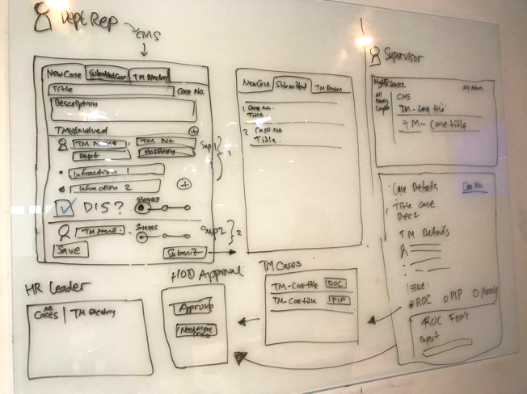
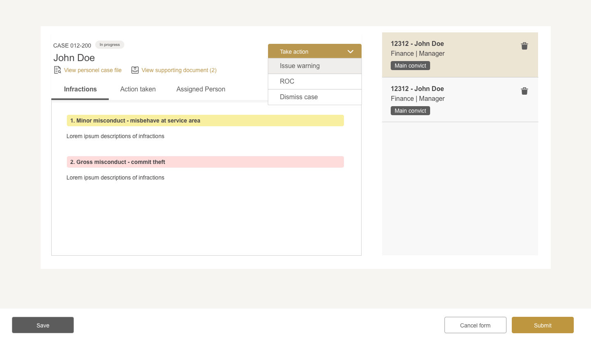
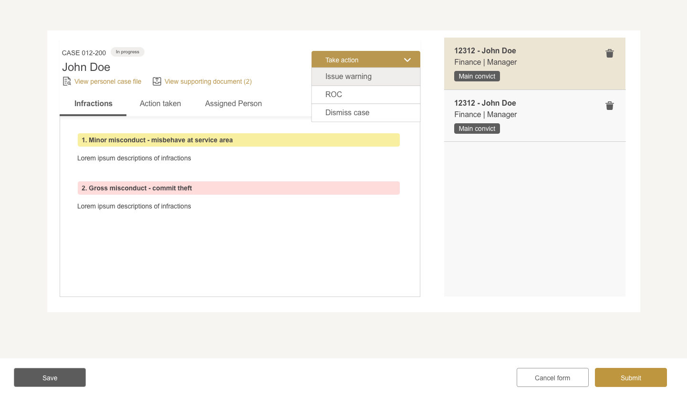

A reporting and processing workflow for any performace or incident issues relating team member in Marina Bay Sands.

Background
Current Problems
1. Manual processing with excel and paper sheets, resulting in disorganized way of storing and withdrawing.
2. Time inefficiency in back-and-forth information passing between one and another (e.g seeking approval)
3. Lack of reliability and security with current man-handling process.
Goal
Increase the productivty, reliability, and time efficiency in case handling.
Approach
1. Sponsored Users Interview (As-Is Process)
Through a series of workshops to understand the current process and align everybody’s ideas into a consensus. Driving the conversation with a framework (roles & stages) that helps to fill in our process map.

2. Focus Group
We gathered key points from our user focus groups. On their tasks, goals, and pain points. Together we brainstormed and synteshize possible features to corporate in the system.
Key Insights
1. Organisation of data placement easy search to look up for thousand of cases or more.
2. High-level analytics to gain insights on the organization's planning & development.
3. Reminders and alerts cut time inefficiency to avoid delay between one role to another.
4. Tracking activity to log all activities for data accountability purpose.
Future State Flow
Sketching
The page structured as such to be reused for every role.
Wireframe

Apply Visual Component
 

UI Guide